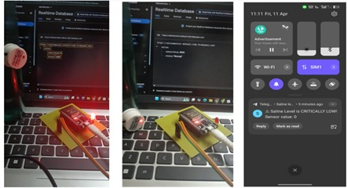
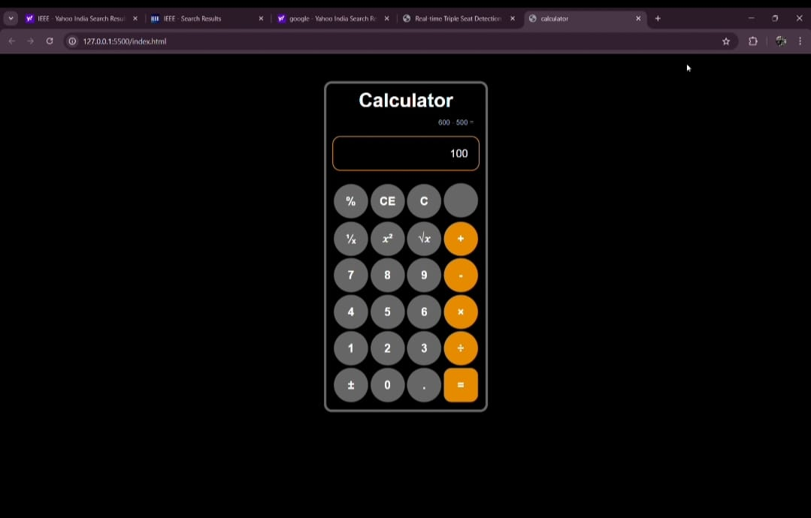

My Projects
Here are some of the projects I’ve worked on recently
Saline Level Monitoring System
An IoT-based medical monitoring system that tracks saline levels using a contactless sensor and ESP32. Alerts are sent via Firebase + IFTTT. The project titled "IoT-Based Saline Water Level Monitoring System using XKC-Y25 Sensor and ESP32" aims to develop a smart, cost-effective, and hygienic solution to monitor saline bottle levels in healthcare settings. Traditional saline monitoring relies on manual observation, which can lead to human error, resulting in potential harm to patients due to delayed action.

Virtual Fitness Trainer
A posture-correcting IoT system using sensors and AI that guides the user with real-time feedback during workouts. With home-based workouts becoming increasingly popular, one glaring issue seems to be a lack of real-time, corrective feedback. Most people work out at home without proper form, which could result in injuries and little effectiveness. This project targets this gap by designing and developing a Real Time Computer Vision-Based Intelligent Fitness Trainer.
Calculator Application
A responsive calculator built using HTML, CSS, and JavaScript supporting basic arithmetic operations and keyboard input.

To-Do List Application
A simple task management web app where users can add, remove, and store tasks locally using LocalStorage.